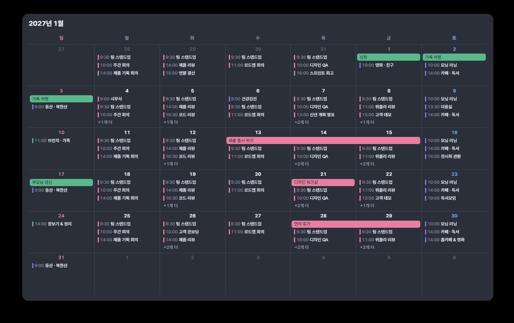
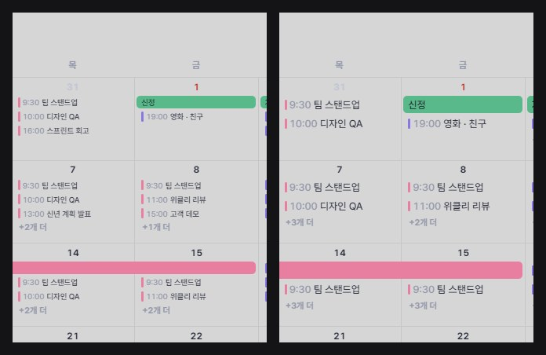
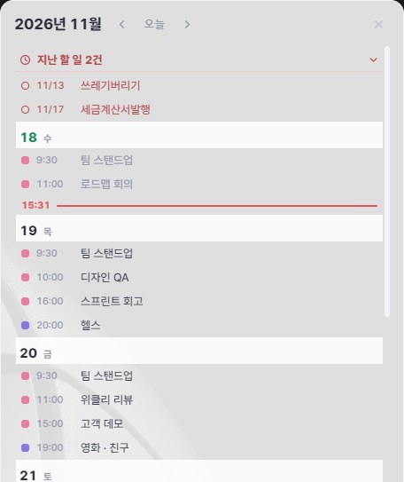

바탕화면에 일정 띄우기 — 무료 캘린더 위젯 고르는 법
- 바탕화면 위젯 앱은 「무료」와 「캘린더 연동」이 같이 오지 않는 경우가 많음.
- 오래된 유명 앱 하나는 외부 캘린더 연동 전체가 유료 기능이어서, 무료판을 깔면 빈 달력을 받음.
- 무료로 연동되는 앱도 대개 구글 캘린더만 지원함. 네이버·Outlook·iCloud 일정은 안 보임.
- 고를 때 볼 것 넷 — 무료판에서도 연결되나 · 내가 쓰는 서비스가 되나 · 양방향이냐 · 데이터가 어디 저장되나.
컴퓨터를 켜면 바탕화면이 먼저 보임. 그래서 「달력을 바탕화면에 그냥 띄워 두면 좋겠다」는 생각은 자연스러움. 문제는 막상 찾아보면 선택지가 생각보다 좁다는 것. 받아서 깔고 나서야 「내 일정이 안 들어오네」를 알게 되는 일이 흔함.
이 글은 바탕화면 캘린더 위젯을 고를 때 설치 전에 확인할 것을 정리한 것. 비교에 쓴 앱은 이름 대신 A·B로 적었음.
함정 1 — 무료판에서는 연동이 막혀 있는 경우
윈도우에서 오래 쓰인 바탕화면 달력 앱(A)이 있음. 무료판과 유료판이 나뉘어 있고, 유료판은 10유로 가량의 1회 결제임. 그런데 기능 목록을 보면 구글 캘린더·Outlook·CalDAV 같은 외부 캘린더 연동이 전부 유료판 기능으로 묶여 있음.
즉 「무료 바탕화면 달력」으로 검색해 A의 무료판을 설치하면, 달력 모양은 예쁘게 뜨지만 내 일정은 한 건도 안 들어옴. 거기서 일정을 직접 적으면 그 컴퓨터 안에만 남고 폰과 이어지지 않음. 연동을 쓰려면 결제를 해야 함.
A의 무료판이 나쁘다는 뜻은 아님. 「내 손으로 적는 바탕화면 달력」으로는 충분함. 다만 이미 쓰는 캘린더를 띄우려는 목적이라면 무료판은 답이 아니라는 것.
함정 2 — 무료로 연동되지만 한 서비스만 되는 경우
무료로 구글 캘린더를 바탕화면에 띄워 주는 앱(B)도 있음. 구글 캘린더와 구글 할 일을 양방향으로 다루고, 받아 온 자료를 그 컴퓨터에만 저장함. 구글만 쓰는 사람에게는 잘 맞는 선택임.
다만 구글만 됨. 네이버 캘린더, 회사에서 쓰는 Microsoft 365, 아이폰과 이어진 iCloud 일정은 들어오지 않음. 한국에서는 「개인은 네이버, 회사는 Outlook」처럼 서비스가 갈려 있는 경우가 많아서, 이 지점에서 막히는 사람이 적지 않음.
그 밖에 바탕화면 꾸미기 도구(C)에 달력 스킨을 올리는 방법도 있음. 보이는 모양은 자유롭지만 스킨마다 기능이 달라, 연동 여부는 고른 스킨에 따라 제각각임.
고를 때 볼 것 네 가지
- 무료판에서도 내 계정을 연결할 수 있나. 「무료」와 「연동 무료」는 다른 말임. 기능 비교표에서 연동 항목에 유료 표시가 붙어 있는지 먼저 볼 것.
- 내가 실제로 쓰는 서비스가 되나. 구글만 되는 앱이 많음. 네이버·Microsoft 365·iCloud를 쓰면 지원 목록을 하나하나 확인해야 함.
- 양방향이냐. 보기만 되는 앱과, 위젯에서 고친 것이 원본에 반영되는 앱은 쓰임새가 꽤 다름.
- 일정이 어디에 저장되나. 일정에는 사람 이름과 장소가 들어감. 받아 온 자료를 내 컴퓨터에 두는지, 중간 서버를 거치는지 확인할 것.
비교표
| 항목 | A 무료판 | A 유료판 | B | PlanB 위젯 |
|---|---|---|---|---|
| 값 | 무료 | 10유로 가량 1회 | 무료 | 무료 |
| 구글 캘린더 | ✕ | ○ | ○ | ○ |
| Microsoft 365 | ✕ | ○ | ✕ | ○ |
| 네이버 · 네이버웍스 | ✕ | △ | ✕ | ○ |
| Apple iCloud · Notion | ✕ | △ | ✕ | ○ |
| 일정 저장 위치 | 내 PC | 내 PC | 내 PC | 내 PC |
표의 △는 된다고 단정할 수 없다는 뜻. A 유료판은 CalDAV 표준을 지원하므로 그 방식을 쓰는 서비스는 연결될 가능성이 있지만, 실제로 확인해 본 결과가 아니라 그대로 적었음.
PlanB Calendar의 위젯
PlanB Calendar는 무료 Windows 캘린더 앱이고, 바탕화면 위젯을 함께 제공함. 앱에 연결한 계정이 그대로 위젯에 올라오는 구조라, 네이버·구글·Microsoft 365·Apple iCloud·Notion을 한 위젯에서 같이 봄.
위젯 종류는 세 가지 — 월뷰(한 달 전체), 미니캘린더(작은 달력), 아젠다(다가오는 일정 목록). 설정 > 위젯에서 고름.

바탕화면에 맞춰 조절되는 것들
- 글자 크기 — 작게·보통·크게. 키우면 「지금 위젯 크기에서 한 칸에 몇 개까지 보이는지」를 함께 알려 줌
- 글자색 — 배경을 단색으로 쓸 때 자동·밝게·어둡게 중에 고름. 짙은 배경에 밝은 글씨를 올릴 수 있음
- 투명도 — 바탕화면 사진을 가리지 않게 조절
- 폭에 맞춘 표시 — 좁히면 일정이 점으로 바뀌고, 넓으면 긴 제목이 말줄임돼 날짜 칸이 어긋나지 않음

할 일과 공휴일
할 일은 종일 일정과 구분되게 테두리와 체크 원으로 표시되고, 완료한 것은 취소선, 기한이 지난 것은 앱과 같은 빨간 톤으로 강조됨. 아젠다 위젯은 맨 위에 「지난 할 일 N건」을 한 줄로 붙여 줌 — 눌러서 무엇이 언제까지였는지 펼쳐 볼 수 있음. 공휴일은 앱과 같은 빨강으로 보이고, 설정에서 공휴일 표시를 끄면 위젯에서도 함께 꺼짐.

일정과 로그인 정보가 저장되는 곳
받아 온 일정은 사용자 PC에 저장함. 로그인 정보는 운영체제의 암호화 저장소에 넣는데, 암호화 열쇠가 지금 로그인한 Windows 사용자 계정에 묶여 있어서 그 파일이 다른 PC나 다른 사용자에게 복사되어도 열리지 않음.
자주 묻는 질문
위젯 자체는 무료인 앱이 여럿 있음. 다만 무료판에서는 구글·Outlook 같은 외부 캘린더 연동이 유료 기능으로 묶여 있는 경우가 많아, 무료로 설치하면 일정이 비어 있는 달력만 보일 수 있음. 설치 전에 「무료판에서도 내 계정을 연결할 수 있는지」를 확인하는 게 좋음.
PlanB Calendar는 네이버·네이버웍스 캘린더를 CalDAV로 연결하고, 연결한 계정의 일정이 바탕화면 위젯에도 함께 표시됨. 무료 위젯 앱 중에는 구글 캘린더만 지원하는 경우가 많아 네이버 일정은 보이지 않을 수 있음.
PlanB Calendar는 받아 온 일정을 사용자 PC에 저장하고, 로그인 정보는 운영체제의 암호화 저장소에 보관함. 암호화 열쇠가 지금 로그인한 Windows 사용자 계정에 묶여 있어 파일이 다른 PC로 복사되어도 열리지 않음.
가능함. 위젯은 앱 창과 별개로 바탕화면에 떠 있고, 앱 창을 닫아도 위젯은 남음. 위젯의 날짜를 누르면 그 날짜로 앱을 열 수 있음.
바탕화면에 내 일정 띄우기
PlanB Calendar는 무료 Windows 데스크탑 캘린더 앱임. 네이버·구글·Microsoft 365·애플 일정을 한 위젯에서.
Windows용 다운로드